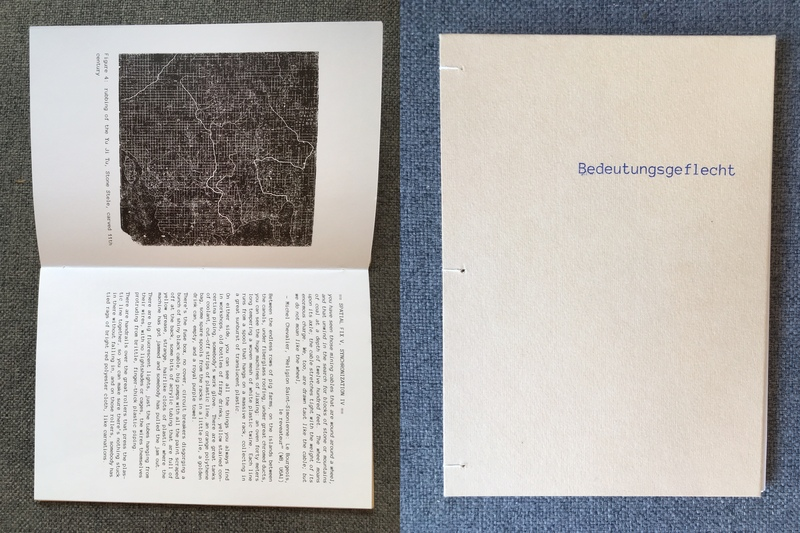

2022-03-05

In March 2013, pig carcasses began to be discovered floating in the Huangpu, the smaller of the two rivers that proceed through Shanghai.
By the 21st, 10,570 carcasses had been pulled from the river, with a further 5,525 pigs discovered in upstream tributaries around Jiaxing.
As for where the pigs came from, what happened to them, and who was responsible, no clear statement was issued.
This is the product of the first time in a while I’ve embarked on a serious writing project: a close look at the history and context of the ‘Huangpu pigs incident’. The book was part of a series produced by Jeroen Cavents.